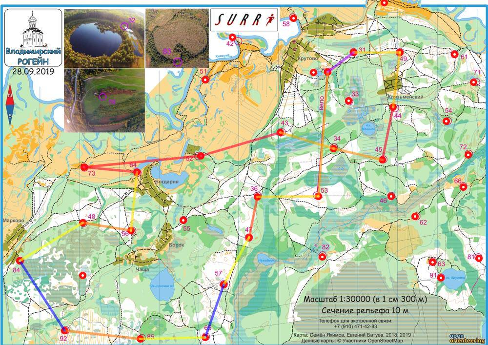

| Команда | Владимир Ф |
| Номер | 156 |
| Участники | Базлов Андрей 1992 Сулейманов Фаиг 1991 Якунин Дмитрий 1991 |
| Группа | мв |
| Место | 29 |
| Очки | 97 |
| Штраф | 0 |
| Время | 05:55:32 |
| Результат | 97 |
| КП | Время | Сплит | Расстояние, км | Темп, мин/км | Отметка, сек |
|---|---|---|---|---|---|
| С | 12:10:00 | ||||
| 53 | 12:37:21 | 00:27:21 | 3.122 | 8.8 | 1 |
| 36 | 12:48:19 | 00:10:58 | 1.534 | 7.1 | 16 |
| 47 | 12:59:48 | 00:11:29 | 1.041 | 11.0 | 3 |
| 57 | 13:08:05 | 00:08:17 | 1.342 | 6.2 | 4 |
| 65 | 20:38:11 | 4591:30:06 | 1.399 | >999 | 0 |
| 85 | 13:40:58 | -4591:02:47 | 1.619 | <1 | 4 |
| 92 | 13:59:21 | 00:18:23 | 1.911 | 9.6 | 9 |
| 84 | 20:38:19 | 4590:38:58 | 2.068 | >999 | 0 |
| 48 | 14:42:51 | -4590:04:32 | 1.84 | <1 | 3 |
| 56 | 14:54:33 | 00:11:42 | 1.235 | 9.5 | 10 |
| 64 | 15:04:37 | 00:10:04 | 1.472 | 6.8 | 7 |
| 73 | 15:26:10 | 00:21:33 | 1.327 | 16.2 | 10 |
| 52 | 16:10:07 | 00:43:57 | 2.932 | 15.0 | 7 |
| 43 | 16:45:16 | 00:35:09 | 2.079 | 16.9 | 10 |
| 34 | 16:56:43 | 00:11:27 | 1.395 | 8.2 | 5 |
| 45 | 17:07:48 | 00:11:05 | 1.246 | 8.9 | 7 |
| 44 | 17:30:08 | 00:22:20 | 1.348 | 16.6 | 10 |
| 49 | 17:40:56 | 00:10:48 | 1.379 | 7.8 | 9 |
| 31 | 17:49:16 | 00:08:20 | 1.16 | 7.2 | 10 |
| Ф | 18:05:32 | 00:16:16 | 0.808 | 20.1 | |
| 05:55:32 | 32.257 км | 12.3 мин/км |
